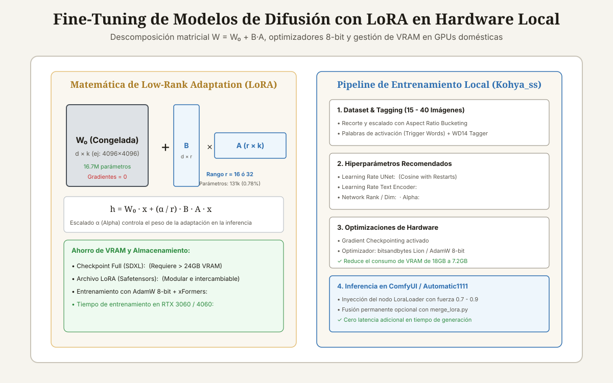

<!DOCTYPE html>
<html lang="es-CL">
<head>
<meta charset="UTF-8">
<meta name="viewport" content="width=device-width, initial-scale=1">

<title>Fine-Tuning de Modelos de Imagen con LoRA en Hardware Local</title>
<meta name="description" content="Cómo hacer fine-tuning de Stable Diffusion y SDXL con LoRA en hardware local: preparación de dataset, hiperparámetros Kohya_ss, VRAM y ComfyUI.">
<meta name="author" content="Alberto Gallardo">
<meta name="robots" content="index,follow,max-image-preview:large">
<link rel="canonical" href="https://www.ukrabot.cl/blog/fine-tuning-de-modelos-de-imagen-con-lora-en-hardware-local">

<meta property="og:type" content="article">
<meta property="og:title" content="Fine-Tuning de Modelos de Imagen con LoRA en Hardware Local">
<meta property="og:description" content="Cómo hacer fine-tuning de Stable Diffusion y SDXL con LoRA en hardware local: preparación de dataset, hiperparámetros Kohya_ss, VRAM y ComfyUI.">
<meta property="og:image" content="https://www.ukrabot.cl/blog/lora_finetuning_esquema.svg">
<meta property="og:url" content="https://www.ukrabot.cl/blog/fine-tuning-de-modelos-de-imagen-con-lora-en-hardware-local">
<meta property="og:locale" content="es_CL">
<meta property="og:site_name" content="Blog de Ingeniería Robótica">

<meta name="twitter:card" content="summary_large_image">
<meta name="twitter:title" content="Fine-Tuning de Modelos de Imagen con LoRA en Hardware Local">
<meta name="twitter:description" content="Cómo hacer fine-tuning de Stable Diffusion y SDXL con LoRA en hardware local: preparación de dataset, hiperparámetros Kohya_ss, VRAM y ComfyUI.">
<meta name="twitter:image" content="https://www.ukrabot.cl/blog/lora_finetuning_esquema.svg">

<script type="application/ld+json">
{
  "@context": "https://schema.org",
  "@type": "TechArticle",
  "headline": "Fine-Tuning de Modelos de Imagen con LoRA en Hardware Local",
  "description": "Cómo hacer fine-tuning de Stable Diffusion y SDXL con LoRA en hardware local: preparación de dataset, hiperparámetros Kohya_ss, VRAM y ComfyUI.",
  "author": {
    "@type": "Person",
    "name": "Alberto Gallardo",
    "jobTitle": "Analista Programador Computacional",
    "url": "https://www.ukrabot.cl/about",
    "worksFor": {
      "@type": "Organization",
      "name": "Blog de Ingeniería Robótica"
    }
  },
  "publisher": {
    "@type": "Organization",
    "name": "Blog de Ingeniería Robótica",
    "url": "https://www.ukrabot.cl",
    "logo": {
      "@type": "ImageObject",
      "url": "https://www.ukrabot.cl/logo.png"
    }
  },
  "datePublished": "2026-08-15",
  "dateModified": "2026-08-15",
  "mainEntityOfPage": {
    "@type": "WebPage",
    "@id": "https://www.ukrabot.cl/blog/fine-tuning-de-modelos-de-imagen-con-lora-en-hardware-local"
  },
  "image": "https://www.ukrabot.cl/blog/lora_finetuning_esquema.svg",
  "proficiencyLevel": "Avanzado",
  "dependencies": "GPU NVIDIA con mínimo 8 GB VRAM (RTX 3060, 4060, 3080, 4090), Python 3.10+, entorno Kohya_ss GUI o sd-scripts, ComfyUI",
  "wordCount": "3450",
  "inLanguage": "es-CL"
}
</script>

<script type="application/ld+json">
{
  "@context": "https://schema.org",
  "@type": "BreadcrumbList",
  "itemListElement": [
    {
      "@type": "ListItem",
      "position": 1,
      "name": "Inicio",
      "item": "https://www.ukrabot.cl/"
    },
    {
      "@type": "ListItem",
      "position": 2,
      "name": "Blog",
      "item": "https://www.ukrabot.cl/blog/"
    },
    {
      "@type": "ListItem",
      "position": 3,
      "name": "Fine-Tuning de Modelos de Imagen con LoRA en Hardware Local",
      "item": "https://www.ukrabot.cl/blog/fine-tuning-de-modelos-de-imagen-con-lora-en-hardware-local"
    }
  ]
}
</script>

<script type="application/ld+json">
{
  "@context": "https://schema.org",
  "@type": "FAQPage",
  "mainEntity": [
    {
      "@type": "Question",
      "name": "¿Cuánto tiempo tarda en entrenar un LoRA en una RTX 3060 de 12GB?",
      "acceptedAnswer": {
        "@type": "Answer",
        "text": "Para un dataset estándar de 30 imágenes a 512x512 con 10 épocas (unas 1.500 iteraciones en total), el entrenamiento en una RTX 3060 tarda aproximadamente <strong>18 a 25 minutos</strong> utilizando precisión mixta FP16 y AdamW de 8 bits."
      }
    },
    {
      "@type": "Question",
      "name": "¿Por qué las imágenes generadas por mi LoRA salen borrosas o con colores quemados?",
      "acceptedAnswer": {
        "@type": "Answer",
        "text": "Colores quemados o líneas excesivamente gruesas indican sobreajuste (overfitting) por exceso de épocas o una tasa de aprendizaje demasiado alta. Imágenes borrosas que no se parecen al concepto indican subentrenamiento (underfitting), requiriendo más pasos de entrenamiento o subir el Network Rank."
      }
    },
    {
      "@type": "Question",
      "name": "¿Puedo entrenar un LoRA en una GPU de AMD o en CPU?",
      "acceptedAnswer": {
        "@type": "Answer",
        "text": "En CPU es inviablemente lento (tardaría días). En GPUs AMD Radeon (como RX 6700XT / 7900XTX) es posible utilizando Linux con la plataforma ROCm y soporte para PyTorch nativo, aunque el ecosistema de herramientas como Kohya_ss está optimizado principalmente para CUDA de NVIDIA."
      }
    },
    {
      "@type": "Question",
      "name": "¿Qué diferencia hay entre un LoRA y un Checkpoint completo?",
      "acceptedAnswer": {
        "@type": "Answer",
        "text": "Un Checkpoint completo contiene los 4 GB a 7 GB de todos los pesos de la red neuronal. Un LoRA es solo un pequeño archivo adaptador de 50 MB a 200 MB que contiene las modificaciones diferenciales; se puede combinar simultáneamente con otros LoRAs en tiempo real durante la generación."
      }
    },
    {
      "@type": "Question",
      "name": "¿Qué es Aspect Ratio Bucketing?",
      "acceptedAnswer": {
        "@type": "Answer",
        "text": "Es un algoritmo que agrupa imágenes de distintas relaciones de aspecto (verticales 9:16, cuadradas 1:1, panorámicas 16:9) en grupos con resoluciones equivalentes en píxeles. Esto evita tener que recortar las imágenes a formato cuadrado, preservando composiciones completas."
      }
    }
  ]
}
</script>

<style>
:root{--ink:#f6f4ee;--card:#ffffff;--text:#1e1b15;--muted:#57534a;--quiet:#8b8577;--gold:#a97b23;--gold-bright:#e4c07a;--blue:#2f6fb0;--line:rgba(30,25,15,.09)}
*{box-sizing:border-box}
html{scroll-behavior:smooth}
body{margin:0;background:var(--ink);color:var(--text);font-family:Inter,system-ui,-apple-system,Segoe UI,sans-serif;line-height:1.7;overflow-x:hidden}
img{max-width:100%;height:auto}
a{color:var(--blue);text-underline-offset:3px}
.container{max-width:1050px;margin:auto;padding:0 24px}

/* NAV */
.site-nav{position:sticky;top:0;z-index:50;background:rgba(246,244,238,.95);backdrop-filter:blur(12px);border-bottom:1px solid var(--line)}
.nav-inner{position:relative;display:flex;justify-content:space-between;align-items:center;padding:16px 24px;max-width:1050px;margin:auto;gap:12px}
.logo{color:var(--text);text-decoration:none;font-family:Georgia,serif;font-size:1.35rem;flex-shrink:0}
.logo span{color:var(--gold);font-style:italic}
.nav-links{display:flex;gap:20px;font-size:.86rem}
.nav-links a{color:var(--muted);text-decoration:none;white-space:nowrap}
.nav-links a:hover{color:var(--text)}
.nav-toggle{display:none;flex-direction:column;justify-content:center;gap:5px;width:38px;height:38px;padding:0;background:none;border:1px solid var(--line);border-radius:8px;cursor:pointer;flex-shrink:0}
.nav-toggle span{display:block;width:18px;height:2px;background:var(--text);margin:0 auto;transition:transform .2s ease,opacity .2s ease}
.nav-toggle[aria-expanded="true"] span:nth-child(1){transform:translateY(7px) rotate(45deg)}
.nav-toggle[aria-expanded="true"] span:nth-child(2){opacity:0}
.nav-toggle[aria-expanded="true"] span:nth-child(3){transform:translateY(-7px) rotate(-45deg)}

.progress-bar{position:fixed;top:0;left:0;height:3px;width:0;background:linear-gradient(90deg,var(--gold),var(--blue));z-index:300;transition:width .08s linear}

.hero{position:relative;min-height:50vh;display:flex;align-items:end;overflow:hidden;background:#151310}
.hero>img{position:absolute;inset:0;width:100%;height:100%;object-fit:cover;filter:brightness(.45) contrast(1.08);z-index:0}
.hero:after{content:"";position:absolute;inset:0;background:linear-gradient(180deg,rgba(18,15,11,.35) 0%,rgba(18,15,11,.62) 55%,rgba(18,15,11,.88) 100%);z-index:1}
.hero-inner{position:relative;z-index:2;padding:90px 24px 60px;width:100%;max-width:1050px;margin:auto}
.eyebrow{color:var(--gold-bright);font-size:.76rem;letter-spacing:.13em;text-transform:uppercase;font-weight:700}
.hero h1{font-family:Georgia,serif;font-size:clamp(1.9rem,5.5vw,3.8rem);line-height:1.15;font-weight:400;max-width:900px;margin:18px 0;color:#fff;word-wrap:break-word}
.hero p{color:rgba(245,243,238,.78);max-width:720px;font-size:1.05rem}
.byline{color:rgba(245,243,238,.55);font-size:.85rem;margin-top:14px}
.byline a{color:var(--gold-bright);text-decoration:none}
.byline a:hover{text-decoration:underline}

.article-body{padding-top:64px;padding-bottom:90px}
.article-body h2{font-family:Georgia,serif;font-size:1.9rem;font-weight:400;line-height:1.2;margin:54px 0 16px;color:var(--text)}
.article-body h3{font-size:1.18rem;margin:32px 0 8px;color:var(--text)}
.article-body p{color:var(--muted);margin:0 0 20px}
.article-body li{color:var(--muted);margin:8px 0}
.article-body strong{color:var(--text)}

.toc,.note,.cta{background:linear-gradient(135deg,rgba(169,123,35,.08),rgba(47,111,176,.06));border:1px solid var(--line);border-radius:14px;padding:24px;margin:28px 0}
.toc h2{font-family:inherit;font-size:1.05rem;margin:0 0 10px}
.toc ol{margin:0;padding-left:22px}
.toc a{color:var(--muted);text-decoration:none}
.toc a:hover{color:var(--gold)}

.note{border-left:4px solid var(--gold)}
.note strong{color:var(--text)}
.warning{background:linear-gradient(135deg,rgba(178,40,30,.08),rgba(178,40,30,.03));border:1px solid rgba(178,40,30,.25);border-left:4px solid #b2281e;border-radius:14px;padding:24px;margin:28px 0}
.warning strong{color:#7a1c14}

.article-img{margin:0 0 42px;border:1px solid var(--line);border-radius:14px;overflow:hidden}
.article-img img{width:100%;display:block}
.caption{padding:12px 16px;background:var(--card);color:var(--quiet);font-size:.82rem}

.table-wrap{overflow-x:auto;-webkit-overflow-scrolling:touch;border:1px solid var(--line);border-radius:12px;margin:22px 0;box-shadow:0 8px 24px rgba(30,25,15,.06)}
table{border-collapse:collapse;width:100%;min-width:650px;background:var(--card)}
th,td{text-align:left;padding:13px 14px;border-bottom:1px solid var(--line);color:var(--muted)}
th{background:#faf7f0;color:var(--text);font-size:.78rem;text-transform:uppercase;letter-spacing:.06em}
td:first-child{color:var(--text);font-weight:600}

pre{overflow-x:auto;-webkit-overflow-scrolling:touch;background:#14121a;border:1px solid rgba(255,255,255,.08);border-radius:12px;padding:20px;color:#e8d9b6;line-height:1.5;font-size:.88rem;white-space:pre-wrap;word-break:break-word}
code{font-family:ui-monospace,SFMono-Regular,Consolas,monospace}

.faq{border-bottom:1px solid var(--line)}
details{border-top:1px solid var(--line);padding:16px 0}
summary{cursor:pointer;color:var(--text);font-weight:600}
details p{padding-top:10px;margin-bottom:0}

.footer-nav{border-top:1px solid var(--line);padding-top:34px;margin-top:54px;display:flex;justify-content:space-between;gap:20px;flex-wrap:wrap}
.footer-nav a{color:var(--muted);text-decoration:none;max-width:100%}
.footer-nav a:hover{color:var(--gold)}

.disclosure{font-size:.78rem;color:var(--quiet);border-top:1px solid var(--line);padding-top:16px;margin-top:34px}
.cta h3{margin:0 0 8px;font-size:1.05rem;color:var(--text)}
.cta p{margin:0}

/* ===== RESPONSIVE ===== */
@media(max-width:760px){
  .nav-toggle{display:flex}
  .nav-links{
    position:absolute;
    top:100%;
    left:0;
    right:0;
    flex-direction:column;
    align-items:flex-start;
    gap:2px;
    background:rgba(246,244,238,.98);
    backdrop-filter:blur(12px);
    border-bottom:1px solid var(--line);
    padding:8px 24px 18px;
    box-shadow:0 12px 24px rgba(30,25,15,.08);
    display:none;
  }
  .nav-links.open{display:flex}
  .nav-links a{padding:10px 0;width:100%}
}

@media(max-width:700px){
  .hero-inner{padding:70px 20px 40px}
  .article-body h2{font-size:1.55rem;margin:40px 0 14px}
  .article-body{padding-top:44px;padding-bottom:60px}
}

@media(max-width:480px){
  .container{padding:0 16px}
  .nav-inner{padding:14px 16px}
  .logo{font-size:1.15rem}
  .hero{min-height:55vh}
  .hero-inner{padding:60px 16px 35px}
  .hero p{font-size:.95rem}
  .eyebrow{font-size:.7rem}
  .article-body h2{font-size:1.35rem}
  .article-body h3{font-size:1.05rem}
  .toc,.note,.cta,.warning{padding:16px;margin:20px 0}
  .toc ol{padding-left:18px}
  th,td{padding:10px 10px;font-size:.82rem}
  table{min-width:560px}
  pre{padding:14px;font-size:.78rem}
  .article-img .caption{font-size:.78rem;padding:10px 12px}
  .disclosure{font-size:.74rem}
  .footer-nav{gap:12px}
  .footer-nav a{font-size:.9rem}
}
</style>
  <script>
  window.dataLayer = window.dataLayer || [];
  function gtag(){dataLayer.push(arguments);}
  gtag('consent', 'default', {
    'ad_storage': 'denied',
    'ad_user_data': 'denied',
    'ad_personalization': 'denied',
    'analytics_storage': 'denied',
    'wait_for_update': 500
  });
  (function(){
    try {
      var c = document.cookie.match(/(?:^|;\s*)rel_consent=([^;]+)/);
      if (c && c[1] === 'granted') {
        gtag('consent', 'update', {
          'ad_storage': 'granted',
          'ad_user_data': 'granted',
          'ad_personalization': 'granted',
          'analytics_storage': 'granted'
        });
      }
    } catch (e) {}
  })();
</script>
  <script async src="https://pagead2.googlesyndication.com/pagead/js/adsbygoogle.js?client=ca-pub-7032484018692343" crossorigin="anonymous"></script>
  <!-- Google tag (gtag.js) -->
  <script async src="https://www.googletagmanager.com/gtag/js?id=G-1ZVHF8X35Q"></script>
  <script>
    window.dataLayer = window.dataLayer || [];
    function gtag(){dataLayer.push(arguments);}
    gtag('js', new Date());
    gtag('config', 'G-1ZVHF8X35Q');
  </script>

</head>
<body>

<div class="progress-bar" id="progress-bar" aria-hidden="true"></div>

<nav class="site-nav" aria-label="Navegación del sitio">
  <div class="nav-inner">
    <a class="logo" href="/">Robótica <span>Ingeniería</span></a>
    <button class="nav-toggle" id="nav-toggle" aria-expanded="false" aria-controls="nav-links" aria-label="Abrir menú de navegación">
      <span></span><span></span><span></span>
    </button>
    <div class="nav-links" id="nav-links">
      <a href="/">Inicio</a>
      <a href="/#categories">Tutoriales</a>
      <a href="/#proyecto-destacado">Proyecto del Mes</a>
      <a href="/about">Sobre Nosotros</a>
      <a href="/contact">Contacto</a>
    </div>
  </div>
</nav>

<header class="hero">
  
  <div class="hero-inner">
    <div class="eyebrow">Inteligencia Artificial y Hardware Local · Actualizado el <time datetime="2026-08-15">15 de agosto de 2026</time></div>
    <h1>Fine-Tuning de Modelos de Imagen con LoRA en Hardware Local</h1>
    <p>Guía práctica con Kohya_ss / sd-scripts: matemática de bajo rango W = W₀ + B·A, preparación de datasets con WD14, optimizadores 8-bit, gestión de VRAM en GPUs de 8GB/12GB/16GB y pruebas en ComfyUI.</p>
    <p class="byline">Por <a href="/about">Alberto Gallardo</a>, Analista Programador Computacional · 20 min de lectura</p>
  </div>
</header>

<main class="container article-body">
<article>

<div class="article-img">
  
  <div class="caption">Descomposición matricial de bajo rango LoRA y pipeline de entrenamiento local paso a paso con Kohya_ss y aceleración en GPU doméstica.</div>
</div>

<nav class="toc" aria-label="Índice del contenido">
  <h2>Contenido de la guía</h2>
  <ol>
    <li><a href="#que-es-lora">Fundamentos de Low-Rank Adaptation (LoRA) en modelos de difusión</a></li>
<li><a href="#preparacion-dataset">Preparación del dataset: selección de imágenes y etiquetado (Captioning)</a></li>
<li><a href="#hiperparametros-kohya">Configuración de hiperparámetros en Kohya_ss / sd-scripts</a></li>
<li><a href="#optimizacion-vram-hardware">Optimizaciones de VRAM para GPUs domésticas (8 GB a 16 GB)</a></li>
<li><a href="#inferencia-comfyui">Inferencia y pruebas en ComfyUI</a></li>
<li><a href="#faq">Preguntas frecuentes</a></li>
  </ol>
</nav>

<section id="que-es-lora">
<h2>Fundamentos de Low-Rank Adaptation (LoRA) en modelos de difusión</h2>

<p>Entrenar o reajustar (fine-tuning) un modelo generativo de imágenes completo como <strong>Stable Diffusion 1.5 o SDXL</strong> solía requerir servidores empresariales con múltiples GPUs NVIDIA A100/H100 de 80 GB de VRAM, debido a la necesidad de calcular y almacenar gradientes para los miles de millones de parámetros del modelo base (UNet y Text Encoders).</p>
<p>La técnica <strong>Low-Rank Adaptation (LoRA)</strong>, introducida originalmente por Microsoft para grandes modelos de lenguaje y adaptada a la difusión por Simo Ryu (cloneofsimo), revolucionó la IA generativa local. Su principio matemático es elegante:</p>
<div class="note"><strong>Descomposición Matricial de Bajo Rango:</strong>
Durante el reentrenamiento, los pesos originales del modelo $W_0 \in \mathbb{R}^{d 	imes k}$ se <strong>congelan (Freezing)</strong> por completo. La actualización de pesos $\Delta W$ se descompone en el producto de dos matrices de bajo rango $B$ y $A$:
$$W = W_0 + \Delta W = W_0 + rac{lpha}{r} \cdot (B \cdot A)$$
Donde $B \in \mathbb{R}^{d 	imes r}$, $A \in \mathbb{R}^{r 	imes k}$ y el rango $r \ll \min(d, k)$ (típicamente $r = 16$ ó $32$).
</div>
<p>Si la matriz original $W_0$ tiene $4096 	imes 4096 pprox 16.7	ext{ millones de parámetros}$, la descomposición con rango $r = 16$ solo entrena $(4096 	imes 16) + (16 	imes 4096) = 131.072	ext{ parámetros}$ (¡menos del <strong>0.8%</strong> del tamaño original!).</p>

</section>
<section id="preparacion-dataset">
<h2>Preparación del dataset: selección de imágenes y etiquetado (Captioning)</h2>

<p>El éxito de un LoRA depende en un 80% de la calidad del dataset y solo en un 20% de los hiperparámetros. Sigue estas pautas estrictas:</p>
<ol>
  <li><strong>Cantidad y Resolución:</strong>
    <ul>
      <li>Para un estilo artístico o concepto: <strong>20 a 50 imágenes</strong> variadas en alta resolución.</li>
      <li>Para un objeto técnico o personaje: <strong>15 a 30 imágenes</strong> con distintos fondos, iluminaciones, ángulos de cámara y expresiones.</li>
    </ul>
  </li>
  <li><strong>Estrategia de Etiquetado y Trigger Words:</strong>
    <ul>
      <li>Asigna una palabra clave única (Trigger Word) que no exista en el diccionario común (ej: <code>mi_robot_arm_v1</code>).</li>
      <li>Usa un etiquetador automático como <strong>WD14 Tagger (Danbooru)</strong> o <strong>BLIP/JoyCaption</strong> para generar archivos de texto <code>.txt</code> individuales por cada imagen.</li>
      <li><strong>Regla de oro del etiquetado:</strong> Todo lo que describas en el archivo de texto será asociado a conceptos generales ya conocidos por el modelo; lo que <em>NO</em> describas será absorbido y memorizado por tu Trigger Word.</li>
    </ul>
  </li>
</ol>

</section>

<div class="ad-slot" style="margin:34px 0;min-height:280px;text-align:center;">
  <!-- ANUNCIO UKRABOT -->
  <ins class="adsbygoogle"
       style="display:block"
       data-ad-client="ca-pub-7032484018692343"
       data-ad-slot="7434550690"
       data-ad-format="auto"
       data-full-width-responsive="true"></ins>
  <script>(adsbygoogle = window.adsbygoogle || []).push({});</script>
</div>
<section id="hiperparametros-kohya">
<h2>Configuración de hiperparámetros en Kohya_ss / sd-scripts</h2>

<p>Para entrenar un LoRA estable sin quemar colores (overfitting) ni perder fidelidad, utiliza esta configuración de referencia en <strong>Kohya_ss GUI</strong>:</p>
<div class="table-wrap">
<table>
<thead>
<tr>
<th>Parámetro</th>
<th>Valor Recomendado (SD 1.5)</th>
<th>Valor Recomendado (SDXL)</th>
<th>Explicación Técnica</th>
</tr>
</thead>
<tbody>
<tr>
<td><strong>Network Rank (Dimension $r$)</strong></td>
<td>16 o 32</td>
<td>32 o 64</td>
<td>Capacidad expresiva del LoRA. Valores mayores aumentan tamaño en MB.</td>
</tr>
<tr>
<td><strong>Network Alpha ($lpha$)</strong></td>
<td>16 (igual a $r$)</td>
<td>32</td>
<td>Factor de escala de gradiente. Si $lpha = r$, la tasa de aprendizaje es constante.</td>
</tr>
<tr>
<td><strong>Learning Rate (UNet)</strong></td>
<td>$1 	imes 10^{-4}$ (0.0001)</td>
<td>$5 	imes 10^{-5}$ (0.00005)</td>
<td>Velocidad de ajuste de capas de atención.</td>
</tr>
<tr>
<td><strong>Learning Rate (Text Encoder)</strong></td>
<td>$5 	imes 10^{-5}$</td>
<td>$1 	imes 10^{-5}$</td>
<td>Ajuste de vocabulario en CLIP. Entrenar a la mitad del UNet.</td>
</tr>
<tr>
<td><strong>LR Scheduler</strong></td>
<td>cosine_with_restarts</td>
<td>cosine</td>
<td>Curva de reducción progresiva de tasa de aprendizaje.</td>
</tr>
<tr>
<td><strong>Optimizador</strong></td>
<td>AdamW8bit / Prodigy</td>
<td>Adafactor / AdamW8bit</td>
<td>Optimizadores de 8-bit reducen uso de VRAM a la mitad.</td>
</tr>
<tr>
<td><strong>Resolución Máxima</strong></td>
<td>512, 512 o 768, 768</td>
<td>1024, 1024</td>
<td>Habilitar Aspect Ratio Bucketing para no recortar imágenes.</td>
</tr>
</tbody>
</table>
</div>

</section>
<section id="optimizacion-vram-hardware">
<h2>Optimizaciones de VRAM para GPUs domésticas (8 GB a 16 GB)</h2>

<p>Para lograr entrenar modelos en tarjetas como la NVIDIA RTX 3060 (12 GB) o RTX 4060 (8 GB) sin errores de <code>CUDA Out of Memory</code>, activa las siguientes banderas de compilación:</p>
<ul>
  <li><code>--gradient_checkpointing</code>: Recalcula activaciones intermedias durante la pasada hacia atrás en lugar de guardarlas en VRAM, ahorrando un <strong>40% de memoria</strong> con solo un 15% de penalización de tiempo.</li>
  <li><code>--xformers</code> / <code>--sdpa</code>: Activa el cálculo de atención optimizada (Memory Efficient Scaled Dot-Product Attention).</li>
  <li><code>--mixed_precision="fp16"</code> o <code>"bf16"</code>: Utiliza precisión de 16 bits para tensores y pesos congelados.</li>
</ul>
<pre><code># Comando bash de entrenamiento con sd-scripts para GPU de 8GB:
accelerate launch --num_cpu_threads_per_process=4 "./sd-scripts/train_network.py" \
  --pretrained_model_name_or_path="./models/sd15_base.safetensors" \
  --train_data_dir="./dataset/mi_robot" \
  --output_dir="./output_lora" \
  --output_name="mi_robot_arm_v1" \
  --learning_rate=1e-4 \
  --unet_lr=1e-4 \
  --text_encoder_lr=5e-5 \
  --network_module=networks.lora \
  --network_dim=16 \
  --network_alpha=16 \
  --max_train_epochs=10 \
  --mixed_precision="fp16" \
  --save_precision="fp16" \
  --optimizer_type="AdamW8bit" \
  --gradient_checkpointing \
  --xformers \
  --enable_bucket
</code></pre>

</section>
<section id="inferencia-comfyui">
<h2>Inferencia y pruebas en ComfyUI</h2>

<p>Una vez completado el entrenamiento, obtendrás un archivo de apenas <strong>50 MB a 220 MB</strong> (<code>.safetensors</code>). Para probarlo en <strong>ComfyUI</strong>:</p>
<ol>
  <li>Coloca el archivo en la carpeta <code>ComfyUI/models/loras/</code>.</li>
  <li>Inserta el nodo <strong>Load LoRA</strong> entre tu <em>Load Checkpoint</em> y el <em>KSampler</em>.</li>
  <li>Ajusta la fuerza (Strength Model / Strength CLIP) a <strong>0.75 - 0.85</strong>. No uses fuerza 1.0 de inmediato para evitar artefactos visuales.</li>
  <li>Escribe en el prompt positivo tu palabra de activación (Trigger Word) acompañada del contexto deseado.</li>
</ol>

</section>


<section class="faq" id="faq" aria-label="Preguntas frecuentes">
<h2>Preguntas Frecuentes</h2>
<div class="faq">
<details><summary>¿Cuánto tiempo tarda en entrenar un LoRA en una RTX 3060 de 12GB?</summary><p>Para un dataset estándar de 30 imágenes a 512x512 con 10 épocas (unas 1.500 iteraciones en total), el entrenamiento en una RTX 3060 tarda aproximadamente <strong>18 a 25 minutos</strong> utilizando precisión mixta FP16 y AdamW de 8 bits.</p></details>
<details><summary>¿Por qué las imágenes generadas por mi LoRA salen borrosas o con colores quemados?</summary><p>Colores quemados o líneas excesivamente gruesas indican sobreajuste (overfitting) por exceso de épocas o una tasa de aprendizaje demasiado alta. Imágenes borrosas que no se parecen al concepto indican subentrenamiento (underfitting), requiriendo más pasos de entrenamiento o subir el Network Rank.</p></details>
<details><summary>¿Puedo entrenar un LoRA en una GPU de AMD o en CPU?</summary><p>En CPU es inviablemente lento (tardaría días). En GPUs AMD Radeon (como RX 6700XT / 7900XTX) es posible utilizando Linux con la plataforma ROCm y soporte para PyTorch nativo, aunque el ecosistema de herramientas como Kohya_ss está optimizado principalmente para CUDA de NVIDIA.</p></details>
<details><summary>¿Qué diferencia hay entre un LoRA y un Checkpoint completo?</summary><p>Un Checkpoint completo contiene los 4 GB a 7 GB de todos los pesos de la red neuronal. Un LoRA es solo un pequeño archivo adaptador de 50 MB a 200 MB que contiene las modificaciones diferenciales; se puede combinar simultáneamente con otros LoRAs en tiempo real durante la generación.</p></details>
<details><summary>¿Qué es Aspect Ratio Bucketing?</summary><p>Es un algoritmo que agrupa imágenes de distintas relaciones de aspecto (verticales 9:16, cuadradas 1:1, panorámicas 16:9) en grupos con resoluciones equivalentes en píxeles. Esto evita tener que recortar las imágenes a formato cuadrado, preservando composiciones completas.</p></details>
</div>
</section>

<p class="disclosure">Este artículo es contenido editorial independiente: no contiene ubicaciones patrocinadas ni enlaces de afiliado. El código, esquemas y parámetros de diseño son de carácter técnico y deben validarse con las hojas de datos de los fabricantes correspondientes. Si detectas un error técnico o tienes una sugerencia, puedes <a href="/contact">contactarnos directamente</a>.</p>

<div class="cta">
  <h3>Continúa explorando tutoriales técnicos</h3>
  <p>Aprende cómo ejecutar modelos de lenguaje locales en tu propia máquina con nuestra guía de Ollama.</p>
</div>

<div class="footer-nav">
  <a href="/blog/lenguajes-de-programacion-para-brazos-roboticos">← Lenguajes de Programación para Brazos Robóticos</a>
  <a href="/blog/modelos-de-lenguaje-locales-con-ollama">Modelos de Lenguaje Locales con Ollama →</a>
</div>

</article>

<section class="editorial-sources" aria-label="Fuentes primarias" style="margin:48px 0 24px;padding:22px 24px;background:#ffffff;border:1px solid rgba(30,25,15,.09);border-radius:12px;">
<h2 style="margin-top:0;font-family:Georgia,serif;font-weight:400;font-size:1.4rem;color:#1e1b15;">Fuentes primarias y lecturas recomendadas</h2>
<p style="font-size:.9rem;color:#57534a;">Hojas de datos oficiales, estándares internacionales de ingeniería y documentación técnica citada en este artículo.</p>
<ul>
<li><a href="https://arxiv.org/abs/2106.09685" target="_blank" rel="noopener noreferrer">Hu et al. (Microsoft) — LoRA: Low-Rank Adaptation of Large Language Models (arXiv:2106.09685)</a></li>
<li><a href="https://github.com/kohya-ss/sd-scripts" target="_blank" rel="noopener noreferrer">Kohya S. — sd-scripts: Training scripts for Stable Diffusion and SDXL models</a></li>
<li><a href="https://docs.comfy.org/" target="_blank" rel="noopener noreferrer">ComfyUI Official Documentation — Node Workflows and LoRA Injection Architecture</a></li>
<li><a href="https://arxiv.org/abs/2110.02861" target="_blank" rel="noopener noreferrer">Dettmers et al. — 8-bit Optimizers via Block-wise Dynamic Quantization (ICLR)</a></li>
</ul>
<p style="font-size:.75rem;color:#8b8577;margin-bottom:0;">Enlaces y especificaciones revisadas: 15 de agosto de 2026.</p>
</section>
</main>

<footer class="container" style="border-top:1px solid var(--line);padding-top:34px;padding-bottom:45px;color:var(--quiet);font-size:.85rem">
  <p>Blog de Ingeniería Robótica · Tutoriales prácticos de Arduino, robótica, automatización y electrónica aplicada, escritos y mantenidos por Alberto Gallardo.</p>
  <p style="margin-top:10px;">
    <a href="/about" style="color:var(--muted);text-decoration:none;margin-right:16px;">Sobre Nosotros</a>
    <a href="/contact" style="color:var(--muted);text-decoration:none;margin-right:16px;">Contacto</a>
    <a href="/privacy" style="color:var(--muted);text-decoration:none;">Política de Privacidad</a>
  </p>
  <div style="max-width:1100px;margin:28px auto 0;padding-top:20px;border-top:1px solid rgba(30,25,15,.09);display:flex;flex-wrap:wrap;gap:18px;align-items:center;justify-content:space-between;">
      <p style="font-size:0.8rem;opacity:0.6;margin:0;">&copy; 2023&ndash;2026 Blog de Ingeniería Robótica · Alberto Gallardo. Todos los derechos reservados.</p>
      <nav aria-label="Enlaces legales y de empresa" style="display:flex;flex-wrap:wrap;gap:18px;">
        <a href="/about" style="font-size:0.82rem;opacity:0.75;text-decoration:none;color:inherit;">Sobre Nosotros</a>
        <a href="/contact" style="font-size:0.82rem;opacity:0.75;text-decoration:none;color:inherit;">Contacto</a>
        <a href="/privacy" style="font-size:0.82rem;opacity:0.75;text-decoration:none;color:inherit;">Política de Privacidad</a>
        <a href="/terms" style="font-size:0.82rem;opacity:0.75;text-decoration:none;color:inherit;">Términos y Condiciones</a>
      </nav>
  </div>
</footer>

<div id="rel-consent" role="dialog" aria-modal="false" aria-labelledby="rel-consent-title" hidden
     style="position:fixed;left:0;right:0;bottom:0;z-index:9999;background:#ffffff;border-top:1px solid rgba(30,25,15,0.12);box-shadow:0 -8px 32px rgba(30,25,15,0.18);padding:20px 24px;font-family:Inter,system-ui,-apple-system,Segoe UI,sans-serif;">
  <div style="max-width:1100px;margin:0 auto;display:flex;flex-wrap:wrap;gap:20px;align-items:center;justify-content:space-between;">
    <div style="flex:1;min-width:260px;">
      <p id="rel-consent-title" style="margin:0 0 6px;font-size:0.95rem;font-weight:600;color:#1e1b15;">Usamos cookies</p>
      <p style="margin:0;font-size:0.85rem;line-height:1.5;color:#57534a;">
        Usamos cookies para operar este sitio y, con tu consentimiento, para mostrar anuncios personalizados a través de Google AdSense.
        Puedes rechazar y seguir leyendo todo el contenido. Consulta nuestra
        <a id="rel-consent-privacy" href="/privacy" style="color:#2f6fb0;">Política de Privacidad</a>.
      </p>
    </div>
    <div style="display:flex;gap:10px;flex-wrap:wrap;">
      <button type="button" id="rel-consent-decline"
        style="padding:11px 22px;border-radius:999px;border:1px solid rgba(30,25,15,0.25);background:transparent;color:#1e1b15;font-family:inherit;font-weight:600;font-size:0.85rem;cursor:pointer;">Rechazar</button>
      <button type="button" id="rel-consent-accept"
        style="padding:11px 22px;border-radius:999px;border:none;background:#a97b23;color:#ffffff;font-family:inherit;font-weight:700;font-size:0.85rem;cursor:pointer;">Aceptar todo</button>
    </div>
  </div>
</div>
<script>
(function () {
  var NAME = 'rel_consent';
  var box = document.getElementById('rel-consent');
  if (!box) return;

  function read() {
    var m = document.cookie.match(/(?:^|;\s*)rel_consent=([^;]+)/);
    return m ? m[1] : null;
  }
  function write(v) {
    var d = new Date();
    d.setTime(d.getTime() + 180 * 24 * 60 * 60 * 1000);
    document.cookie = NAME + '=' + v + ';expires=' + d.toUTCString() + ';path=/;SameSite=Lax';
  }

  if (!read()) box.hidden = false;

  function decide(granted) {
    write(granted ? 'granted' : 'denied');
    if (typeof gtag === 'function') {
      gtag('consent', 'update', {
        'ad_storage': granted ? 'granted' : 'denied',
        'ad_user_data': granted ? 'granted' : 'denied',
        'ad_personalization': granted ? 'granted' : 'denied',
        'analytics_storage': granted ? 'granted' : 'denied'
      });
    }
    box.hidden = true;
  }

  document.getElementById('rel-consent-accept').addEventListener('click', function () { decide(true); });
  document.getElementById('rel-consent-decline').addEventListener('click', function () { decide(false); });
})();
</script>
<script>
(function () {
  var bar = document.getElementById('progress-bar');
  if (!bar) return;
  function update() {
    var doc = document.documentElement;
    var max = doc.scrollHeight - doc.clientHeight;
    var pct = max > 0 ? (window.scrollY || doc.scrollTop) / max * 100 : 0;
    bar.style.width = pct + '%';
  }
  window.addEventListener('scroll', update, { passive: true });
  window.addEventListener('resize', update);
  update();
})();
</script>
<script>
(function () {
  var toggle = document.getElementById('nav-toggle');
  var links = document.getElementById('nav-links');
  if (!toggle || !links) return;

  toggle.addEventListener('click', function () {
    var expanded = toggle.getAttribute('aria-expanded') === 'true';
    toggle.setAttribute('aria-expanded', String(!expanded));
    links.classList.toggle('open');
  });

  links.querySelectorAll('a').forEach(function (a) {
    a.addEventListener('click', function () {
      toggle.setAttribute('aria-expanded', 'false');
      links.classList.remove('open');
    });
  });

  document.addEventListener('click', function (e) {
    if (!links.contains(e.target) && !toggle.contains(e.target)) {
      toggle.setAttribute('aria-expanded', 'false');
      links.classList.remove('open');
    }
  });
})();
</script>
</body>
</html>